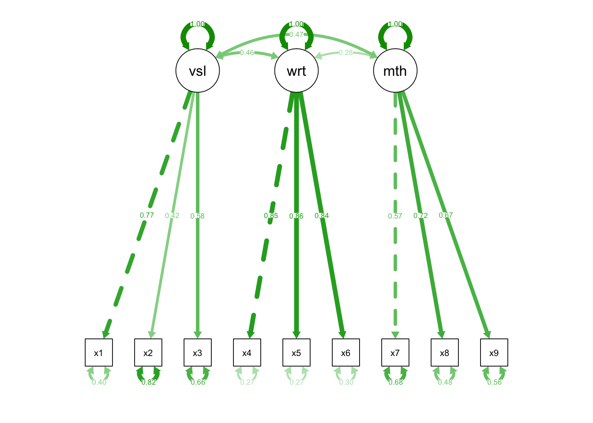
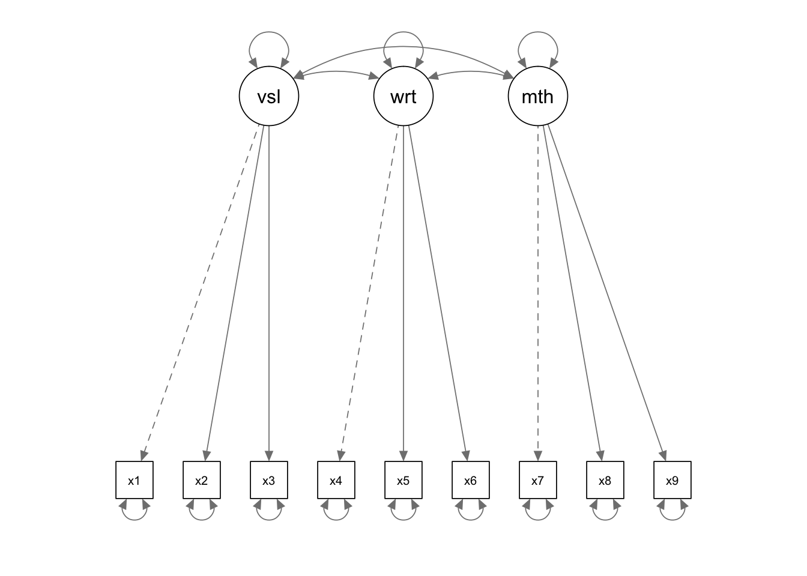

Confirmatory factor analysis (CFA)
Open some data and check that all looks well:
hz <- lavaan::HolzingerSwineford1939
hz %>% glimpse()
## Observations: 301
## Variables: 15
## $ id <int> 1, 2, 3, 4, 5, 6, 7, 8, 9, 11, 12, 13, 14, 15, 16, 17, ...
## $ sex <int> 1, 2, 2, 1, 2, 2, 1, 2, 2, 2, 1, 1, 2, 2, 1, 2, 2, 1, 2...
## $ ageyr <int> 13, 13, 13, 13, 12, 14, 12, 12, 13, 12, 12, 12, 12, 12,...
## $ agemo <int> 1, 7, 1, 2, 2, 1, 1, 2, 0, 5, 2, 11, 7, 8, 6, 1, 11, 5,...
## $ school <fctr> Pasteur, Pasteur, Pasteur, Pasteur, Pasteur, Pasteur, ...
## $ grade <int> 7, 7, 7, 7, 7, 7, 7, 7, 7, 7, 7, 7, 7, 7, 7, 7, 7, 7, 7...
## $ x1 <dbl> 3.333333, 5.333333, 4.500000, 5.333333, 4.833333, 5.333...
## $ x2 <dbl> 7.75, 5.25, 5.25, 7.75, 4.75, 5.00, 6.00, 6.25, 5.75, 5...
## $ x3 <dbl> 0.375, 2.125, 1.875, 3.000, 0.875, 2.250, 1.000, 1.875,...
## $ x4 <dbl> 2.333333, 1.666667, 1.000000, 2.666667, 2.666667, 1.000...
## $ x5 <dbl> 5.75, 3.00, 1.75, 4.50, 4.00, 3.00, 6.00, 4.25, 5.75, 5...
## $ x6 <dbl> 1.2857143, 1.2857143, 0.4285714, 2.4285714, 2.5714286, ...
## $ x7 <dbl> 3.391304, 3.782609, 3.260870, 3.000000, 3.695652, 4.347...
## $ x8 <dbl> 5.75, 6.25, 3.90, 5.30, 6.30, 6.65, 6.20, 5.15, 4.65, 4...
## $ x9 <dbl> 6.361111, 7.916667, 4.416667, 4.861111, 5.916667, 7.500...Defining the model
As noted above, to define models in lavaan you must specify the relationships between variables in a text format. A full guide to this lavaan model syntax is available on the project website.
For CFA models, like path models, the format is fairly simple, and resembles a series of linear models, written over several lines.
In the model below there are three latent variables, visual, writing and maths. The latent variable names are followed by =~ which means ‘is manifested by’, and then the observed variables, our measures for the latent variable, are listed, separated by the + symbol.
hz.model <- '
visual =~ x1 + x2 + x3
writing =~ x4 + x5 + x6
maths =~ x7 + x8 + x9'Note that we have saved our model specification/syntax in a variable named hz.model.
The other special symbols in the lavaan syntax which can be used for CFA models are:
a ~~ b, which represents a covariance.a ~~ a, which is a variance (you can think of this as the covariance of a variable with itself)
To run the analysis we again pass the model specification and the data to the cfa() function:
hz.fit <- cfa(hz.model, data=hz)
summary(hz.fit, standardized=TRUE)
## lavaan (0.5-23.1097) converged normally after 35 iterations
##
## Number of observations 301
##
## Estimator ML
## Minimum Function Test Statistic 85.306
## Degrees of freedom 24
## P-value (Chi-square) 0.000
##
## Parameter Estimates:
##
## Information Expected
## Standard Errors Standard
##
## Latent Variables:
## Estimate Std.Err z-value P(>|z|) Std.lv Std.all
## visual =~
## x1 1.000 0.900 0.772
## x2 0.554 0.100 5.554 0.000 0.498 0.424
## x3 0.729 0.109 6.685 0.000 0.656 0.581
## writing =~
## x4 1.000 0.990 0.852
## x5 1.113 0.065 17.014 0.000 1.102 0.855
## x6 0.926 0.055 16.703 0.000 0.917 0.838
## maths =~
## x7 1.000 0.619 0.570
## x8 1.180 0.165 7.152 0.000 0.731 0.723
## x9 1.082 0.151 7.155 0.000 0.670 0.665
##
## Covariances:
## Estimate Std.Err z-value P(>|z|) Std.lv Std.all
## visual ~~
## writing 0.408 0.074 5.552 0.000 0.459 0.459
## maths 0.262 0.056 4.660 0.000 0.471 0.471
## writing ~~
## maths 0.173 0.049 3.518 0.000 0.283 0.283
##
## Variances:
## Estimate Std.Err z-value P(>|z|) Std.lv Std.all
## .x1 0.549 0.114 4.833 0.000 0.549 0.404
## .x2 1.134 0.102 11.146 0.000 1.134 0.821
## .x3 0.844 0.091 9.317 0.000 0.844 0.662
## .x4 0.371 0.048 7.779 0.000 0.371 0.275
## .x5 0.446 0.058 7.642 0.000 0.446 0.269
## .x6 0.356 0.043 8.277 0.000 0.356 0.298
## .x7 0.799 0.081 9.823 0.000 0.799 0.676
## .x8 0.488 0.074 6.573 0.000 0.488 0.477
## .x9 0.566 0.071 8.003 0.000 0.566 0.558
## visual 0.809 0.145 5.564 0.000 1.000 1.000
## writing 0.979 0.112 8.737 0.000 1.000 1.000
## maths 0.384 0.086 4.451 0.000 1.000 1.000Model output
The output has three parts:
Parameter estimates. The values in the first column are the standardised weights from the observed variables to the latent factors.
Factor covariances. The values in the first column are the covariances between the latent factors.
Error variances. The values in the first column are the estimates of each observed variable’s error variance.
Plotting models
As before, we can use the semPaths() function to visualise the model. This is an important step because it helps explain the model to others, and also gives you an opportunity to check you have specified your model correctly.
semPlot::semPaths(hz.fit)
And for ‘final’ models we might want to overplot model parameter estimates (in this case, standardised):
# std refers to standardised estimates. "par" would plot
# the unstandardised estimates
semPlot::semPaths(hz.fit, "std")